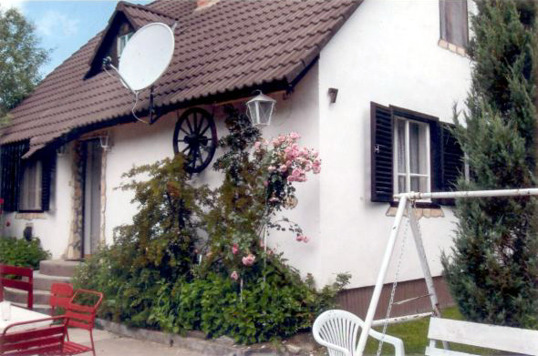
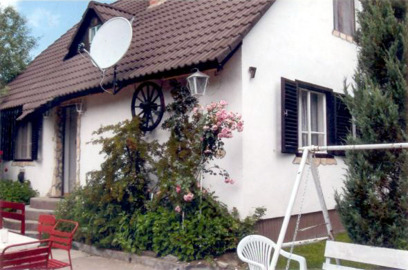
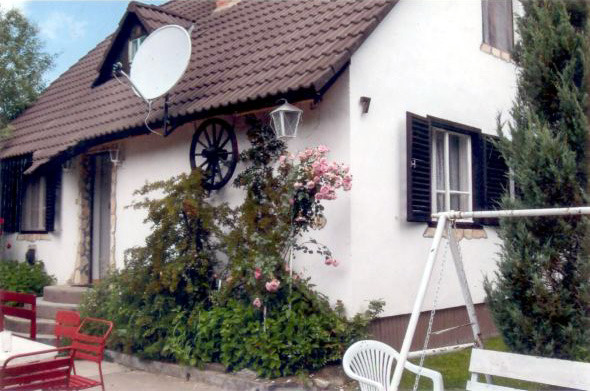

Mátraszentimre csendes részén, üdölőövezetben nyaraló kiadó
A ház lenti részén találhatóak a közös helyiségek, és két szoba. Az emeleten helyezkedik el további két szoba. Minden szobában két ágy található. Ágyneműt és törölközőt biztosítunk. Az étkezőben 8 személyes asztal áll, a konyhában 8 fő részére található étkészlet.

A ház legalább két éjszakára foglalható, rövidebb időre nem!
| Időtartam | 1-4 fő esetén | 5-8 fő esetén |
|---|---|---|
| 2 éjszakára | 48.000.Ft | 64.000.Ft |
| 3 éjszakára | 67.500.Ft | 90.000.Ft |
| 4 éjszakára | 84.000.Ft | 112.000.Ft |
| 5 éjszakára | 97.500.Ft | 130.000.Ft |
| 6 éjszakára | 108.000.Ft | 144.000.Ft |
| 7 éjszakára | 115.500.Ft | 154.000.Ft |
7 éjszakánál hosszabb tartózkodás esetén kérje egyedi ajánlatunkat!